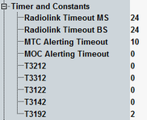

The following parameters control the timing of the connection.

Defines the time period after which a previously established but interrupted connection is dropped by the mobile station. The timeout indicates the number of missing SACCH blocks (corresponding to 480 ms each). Only multiples of 4 are allowed (4, 8, ..., 64).
Remote command:Defines the time period after which an existing, but interrupted connection is aborted by the R&S CMW. The timeout indicates the number of missing SACCH blocks (corresponding to 480 ms each) in the value range 4 to 64.
Remote command:- Mobile terminated call (MTC): maximum time period during which the phone is ringing. If the call is not answered, the R&S CMW returns to the synchronized state.
- Mobile originated call (MOC): time period of R&S CMW alerting state. When the timer expires, the R&S CMW changes to "Call Established" state. If the value is 0, the alerting state is skipped.
Value of the timer T3212 of the periodic location update procedure in deci-hour. If the timer is set to 0, no periodic location update is performed.
Remote command:Value of the timer T3312 of the periodic routing area update procedure in deci-hour. If the timer is set to 0, no periodic routing area update is performed.
Remote command:Immediate assignment reject timers:
- T3122: used during random access for CS connection
- T3142: used during packet access on CCCH
Defines the value of the packet switched TBF release timer. It is used when the MS waits after the reception of the final RLC data block. When the timer expires, the MS releases the resources associated with the TBF and begins to monitor its paging channel.
Option R&S CMW-KS210 is required.
Remote command: